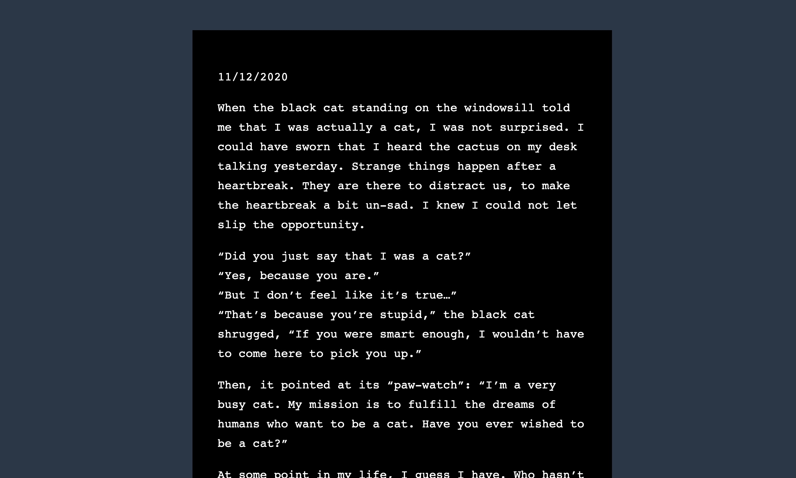
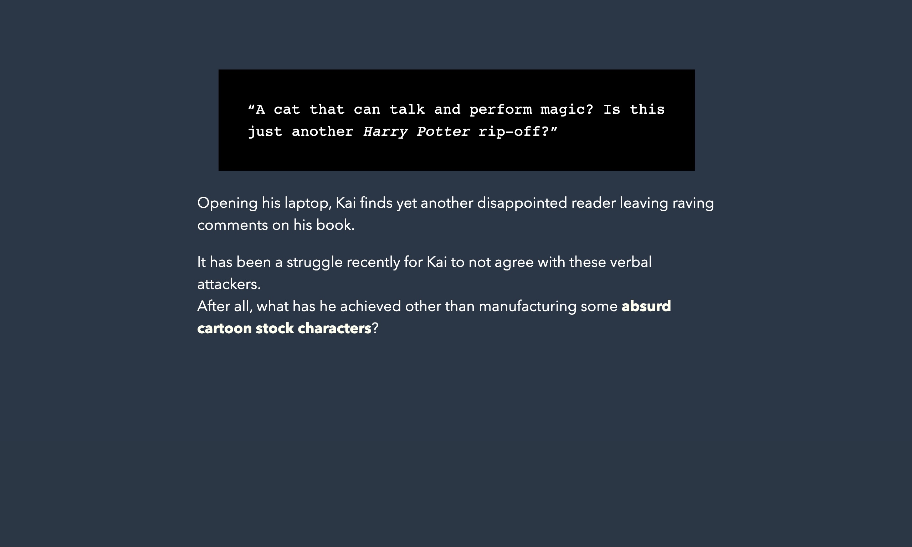
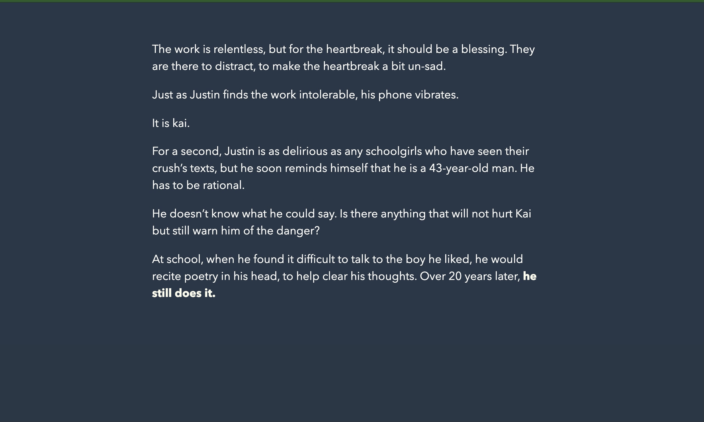
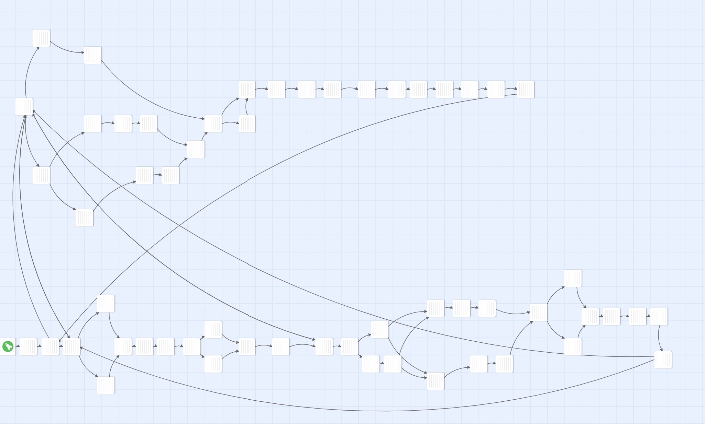

Pizza's Yellow Dream is an interactive fiction
The fiction employs a non-linear plot structure that combines parallel storytelling and circular storytelling.
Project Obejctives
1. Fiction: The story is a speculative fiction type story with two characters, Kai and Justin, and
two perspectives on their
past relationship. It features a speaking cat and other elements that
feel
like magical realism, perhaps a bit like a Murakami novel.
2. Guantelet Structure: consists essentially of two Gauntlet structures running in parallel. This is
a good choice for a
two-perspective story and encourages replay at least once to experience both
perspectives.

Story Structure in Twine
Project Outcome
I demonstrated the basic ability for interactive narrative design.
The fiction features the theme of love and tragedy. The onlooker, (for example the reader), will always see clearer and tell the protagnists to be brave and confident, but only the people on the spot know how hard it is and more often than not, they would choose to knuckle under.
The base of the story is that it presents different perspectives of the same story. The combination of two points of view enables me to not only introduce two sides of the story but also have a focal character with whom the readers sympathise.
This is the first attempt of me understanding the implementation of design iteration (repeatedly improve the project in the prototyping stage).
Also in Game Development:

A mindful VR sandbox game